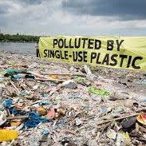
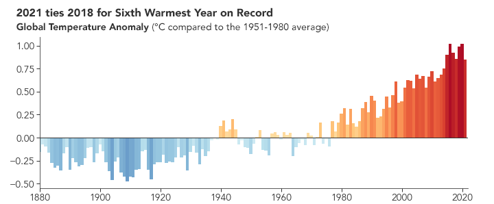
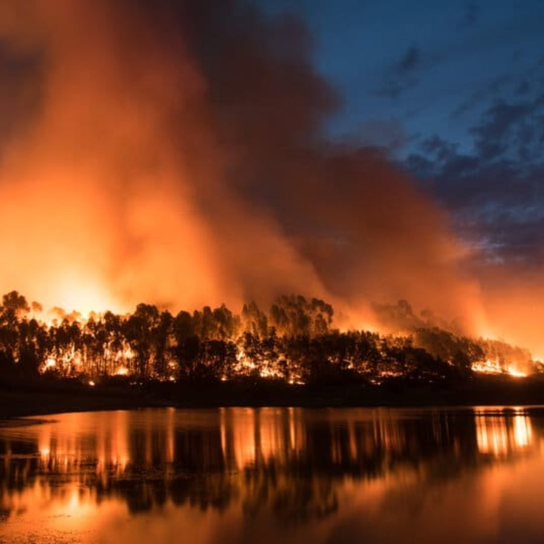
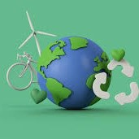

Lots of PFA's and PFAF's have been popping up, seemingly ubiquitiously. While large pollutants have been claiming more and more areas, micro pollutants have been poisoning resources.
Do we really want to have to clean and filter everything from air-conditioning, to water distillation, and even live on cleared-out wastelands?
What are the ramifications for our desire to control conquer our environment?
Temperatures are on the rise. Entire ecosystems are being destroyed, either by pollution, temperature, or our need to strip mine. Species are going extinct.
Just becuase we can dominate the world to make our lives easier in the short term doesn't mean we should.
What can you do?
-Reduce:
+Electricty
+Gas/Oil/Coal
(WALK, SKATE, or BIKE short distances!)
+Single Use Plastics!
-Reuse:
+Containers
+Clothing
+Technology
Infrastructure (Cars/Houses)
-Recycle:
+Metal
+Plasic
+Glass
+Paper and wood!
Want to find out howYOU can make a difference without really making a difference to you?
Try these links to donate, or just use a search engine committed to making a difference!

HOW?
How bad is it?
Click here (or scroll to the bottom) to see a timeline of our temperatures, a direct result of CO2 concentration.
How quickly are we running through our resources?
Earth.org indicates that our "Earth Overshoot Day" in 2023 was August 2nd. This means that for the last 5 months, almost half a year, we are consuming resources faster than Earth is capable of renewing them.
Also, according to
Earth.org, the fashion industry is responsible for nearly 10% of global emissions!
How are positive feedback loops making things worse?
-As ice melts, the water traps 1000% as much of the sun's heat than it would as ice.
-Population booms consume more land, resources, and make it difficult to offset our energy needs.
-Permafrost melting releases 10x the ammount of CO2 than humanity creates. It is also responsible for invasive species, viruses, and pests to move North and to higher elevations.
How do we fix it?
It helps to know how we got to where we are today, when things started to change more dramatically, and why.
Then we can focus our collective efforts in the right direction, like regulating corporate emissions, public transportations, and renewable energies.
For immediate restitution, or perfunctory and picayune things you can do to help, read my
Reduce, Reuse, Recycle" list in the bubble above.
The key is to remain inquisitive, understand, and be willing to act and sacrifice some luxuries.
Look into short and long term effects.
Learn how certain influences interact to create the gestalt environment.
Realize what is economical may not be ecological.
Once humanity stops being ego-centric it can become eco-centric
It may cost some effort, some money, and some convenience, but we can help slow the contamination our species propagates.

WHY?
Why is this heppening?
Industrial society loves using fossil fuels as a workhorse to do our hard labor.
While building up massive projects, we have also released massive ammounts of CO2 into our atmosphere.
America and China alone have released 1.65(107)metric tons of CO2 in 2021. Believe it or not, this is down roughly 12% since a decade ago.
Human avarice for abundant and cheap energy has driven us to emit CO2 in prodigious quantities.
When life began on Earth, O2 was considered a poison. Unfortunately, we need oxygen, or we would be saving the planet with pollution. (But then we would still have an oxygen problem.)
The real question is "How do we utilize energy without suffocating, roasting, or poisoning ourselves?"
The pragmatic solution is to invest in renewable energies like wind, solar, fusion, wave, and tidal energies. More solutions tend away from single-use disposable items and toward reusable things from local, recycleable materials.
-OR
We could in biodomes on Earth, where we can filter out everything from pollution, to heat, and even radiation. But we have to be able to grow our food in them too, or that'll be poisoned, roasted, and probably won't grow very well.
WHO?
Who is at risk of all this pollution and heat anyway?
It isn't people on the immediate coastline who need to worry about the arctic glaciers melting.
It is all of posterity.
Your children. Their children. Their children, and so on as long as we hope to exist.
If you love your children, neices, nephews, or anyone really, as we were all children once, you need to care about the future. Everyone else will have someone in the next generation they love.
If you would not harm your loved ones' loved ones, then you should not harm Earth.
Also, scientists suggest extinction rates are 1000x their natural rates due to climate change.
Who do we blame for this mess? Surely there is some "one" at fault, right?
"No blame. No guilt. Just responsibility" is the motto of Stephen Frederick Uhl.
This works well because we are all to blame. You may not be in the industries that pollute the worst, but you probably enjoy some products that are a pittance cheaper because of ecological neglect.
Who can get us out, then? Surely my 'pittance' can make no differance overall.
“Not me, I’m too poor, or I’m just a nobody.” Everyone needs to contribute. You may not think your bit matters or makes a difference, but cumulative efforts have brought upon this disaster, cumulative efforts will help it as well.
Al Gore's An Inconvenient Truth is such a felicitous title, for we can ALL help. We can all do the little things that add up to substantial change. These may not be the "easy," "cheap," or "convenient" ways about things, but we can all bike short distances rather than drive, take public transit, reduce, reuse, and recycle.
Who benefits from all this?
Everyone! Especially all the endangered ecosystems, animals, and the endangered future of Earth and humanity!

WHEN?
When should we start to worry?
About a century ago.
When is it too late?
Conservative estimates suggest it "may not be too late." By modest guesses, not worried about causing panic and hurting feelings, it may already be too late to be considered reversible. This does not mean "just give up, it's too late anyway!"
This ultimately means that although we are leaving a scar on Mother Earth, we should really try to ease up on the depth at which we are cutting into our most precious resource.
When can we stop worrying then?
We can't. Planetary momentum takes a lot of effort and a long time to be moving in a noticable direction, and equally as much time and effort to decelerate and stop. This means ending the warming trend, NOT begining a cooling trend. To fix our issue completely, we may need the better part of a millennia.
Even when climate issues are no longer a "thing," society will still need to remain conscientious of our impact on our environment.
When will we "crash and burn" if we stay our course?
It won’t actually be a “blow” or literal “crash and burn,” it is more like the process of getting a sunburn: the line between a nice tan and starting to burn is very blurry, but getting a severe sunburn is unmistakable. The process will seem like a relatively slow process of gradual change lasting years. Relative to the Earth, even a century is an ephemeral period, though. (A century may be a lifetime+ for individuals, perhaps a generation or two for a family, but relatively seconds as far as evolution sees it, and less than a Plank-time [10-44s] for Earth.) Delaying a complete holocaust is better than throwing the world into an inferno immediately.

WHERE?
Where can you learn more?
-About how minute an average temperature drop can produce a mile of ice over Boston?
+Scroll down for a full time and trend line! (Credit
XKCD.com)